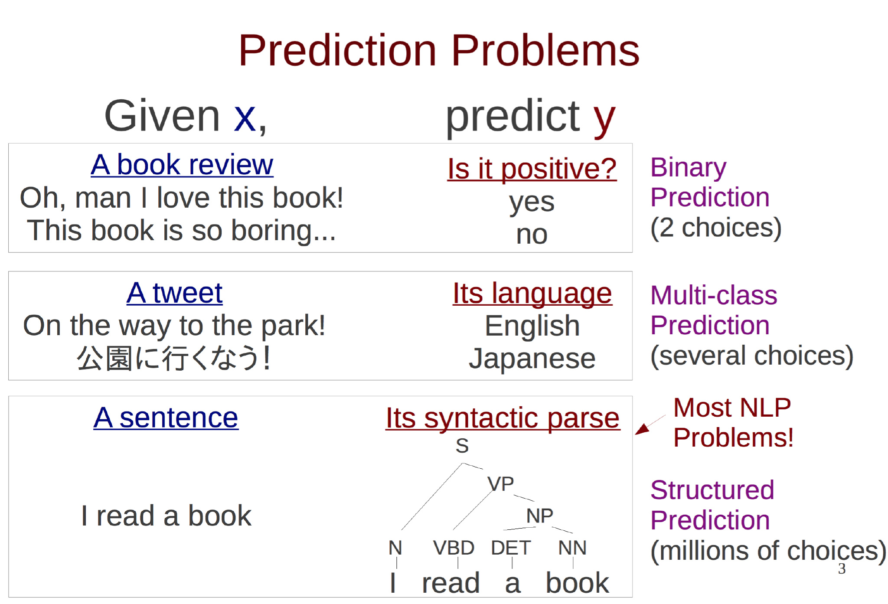

最近高产似母猪，写了个基于AP的中文分词器，在Bakeoff-05的MSR语料上F值有96.11%。最重要的是，只训练了5个迭代；包含语料加载等IO操作在内，整个训练一共才花费23秒。应用裁剪算法去掉模型中80%的特征后，F值才下降不到0.1个百分点，体积控制在11兆。如果训练一百个迭代，F值可达到96.31%，训练时间两分多钟。
数据在一台普通的IBM兼容机上得到：
- head /proc/cpuinfo | grep -i name
- model name : Intel(R) Xeon(R) CPU E3-1220 v5 @ 3.00GHz
- head /proc/meminfo -n 1
- MemTotal: 7968764 kB
结构化预测
关于结构化预测和非结构化预测的区别一张讲义说明如下：

更多知识请参考Neubig的讲义《The Structured Perceptron》。
本文实现的AP分词器预测是整个句子的BMES标注序列，当然属于结构化预测问题了。
感知机
二分类
感知机的基础形式如《统计学习方法》所述，是定义在一个超平面上的线性二分类模型。作为原著第二章，实在是简单得不能再简单了。然而实际运用中，越简单的模型往往生命力越顽强。
这里唯一需要补充的是，感知机是个在线学习模型，学习一个训练实例后，就可以更新整个模型。
多分类
怎么把二分类拓展到多分类呢？可以用多个分类器，对于BMES这4种分类，就是4个感知机了。每个感知机分别负责分辨“是不是B”“是不是M”“是不是E”“是不是S”这4个二分类问题。在实现中，当然不必傻乎乎地创建4个感知机啦。把它们的权值向量拼接在一起，就可以输出“是B的分数”“是M的分数”“是E的分数”“是S的分数”了。取其最大者，就可以初步实现多分类。但在分词中，还涉及到转移特征和HMM-viterbi搜索算法等，留到下文再说。
平均感知机
平均感知机指的是记录每个特征权值的累计值，最后平均得出最终模型的感知机。为什么要大费周章搞个平均算法出来呢？
前面提到过，感知机是个在线学习模型，学习一个训练实例后，就可以更新整个模型。假设有10000个实例，模型在前9999个实例的学习中都完美地得到正确答案，说明此时的模型接近完美了。可是最后一个实例是个噪音点，朴素感知机模型预测错误后直接修改了模型，导致前面9999个实例预测错误，模型训练前功尽弃。
有什么解决方案呢？一种方案是投票式的，即记录每个模型分类正确的次数，作为它的得票。训练结束时取得票最高的模型作为最终模型。但这种算法是不实际的，如果训练5个迭代，10000个实例，那么就需要储存50000个模型及其票数，太浪费了。
最好用的方法是平均感知机，将这50000个模型的权值向量累加起来，最后除以50000就行了，这样任何时候我们只额外记录了一个累加值，非常高效了。关于平均感知机的详情请参考《200行Python代码实现感知机词性标注器》。虽然那篇文章是讲解词性标注的，但相信作为万物灵长的读者一定拥有举一反三的泛化能力。
语言模型
HMM
我们不是在讲解感知机分词吗？怎么跟HMM扯上关系了？
其实任何基于序列标注的分词器都离不开隐马尔科夫链，即BMES这四个标签之间的Bigram（乃至更高阶的n-gram）转移概率。作为其中一员的AP分词器，也不例外地将前一个字符的标签作为了一个特征。该特征对预测当前的标签毫无疑问是有用的，比如前一个标签是B，当前标签就绝不可能是S。
这种类似于y[i-1]的特征在线性图模型中一般称为转移特征，而那些不涉及y[i-1]的特征通常称为状态特征。
viterbi
由于AP分词器用到了转移特征，所以肯定少不了维特比搜索。从序列全体的准确率考虑，搜索也是必不可少的。给定隐马尔可夫模型的3要素，我用Java写了一段“可运行的伪码”：
- int[] viterbi(char[] x)
- {
- float[][] transitions = new float[4][4];
- for (int i = 0; i < 4; ++i)
- {
- for (int j = 0; j < 4; ++j)
- {
- transitions[i][j] = weights.get_value(j * 4 + i);
- }
- }
- float[][] emissions = new float[x.length][4];
- for (int i = 0; i < x.length; i++)
- {
- List<Integer> features = gen_features(x, i, false);
- for (int j = 0; j < 4; ++j)
- {
- for (Integer feature : features)
- {
- emissions[i][j] += weights.get_value(feature * 4 + j);
- }
- }
- }
- float[][] alphas = new float[x.length][4];
- int[][] pointers = new int[x.length][4];
- System.arraycopy(emissions[0], 0, alphas[0], 0, 4);
- Arrays.fill(pointers[0], -1);
- for (int i = 1; i < x.length; ++i)
- {
- for (int j = 0; j < 4; ++j)
- {
- float score = -Float.MAX_VALUE;
- for (int k = 0; k < 4; ++k)
- {
- float s = alphas[i - 1][k] + transitions[k][j] + emissions[i][j];
- if (s > score)
- {
- score = s;
- pointers[i][j] = k;
- }
- }
- alphas[i][j] = score;
- }
- }
- int[] tags = new int[x.length];
- int best = -1;
- float score = -Float.MAX_VALUE;
- for (int j = 0; j < 4; ++j)
- {
- if (alphas[x.length - 1][j] > score)
- {
- score = alphas[x.length - 1][j];
- best = j;
- }
- }
- tags[x.length - 1] = best;
- for (int i = x.length - 2; i >= 0; --i)
- {
- best = pointers[i + 1][best];
- tags[i] = best;
- }
- return tags;
- }
上述实现是个重视条理胜于效率的原型，古人云“过早优化是魔鬼”。相信聪明的读者一定能看懂这里面在干什么。
特征提取
定义字符序列为x，标注序列为y。
转移特征
转移特征就是上面说的y[i-1]。
状态特征
我一共使用了7种状态特征：
- xi−1
- xi
- xi+1
- xi−2xi−1
- xi−1xi
- xixi+1
- xi+1xi
在邓知龙的《基于感知器算法的高效中文分词与词性标注系统设计与实现》中提到，要利用更复杂的字符n-gram、字符类别n-gram、叠字、词典等特征。但在我的实践中，除了上述7种特征外，我每减少一个特征，我的AP分词器的准确率就提高一点，也许是语料不同吧，也许是特征提取的实现不同。总之，主打精简、高效。
训练
迭代数目其实不需要太多，在3个迭代内模型基本就收敛了：
- time java -jar averaged-perceptron-segment-1.0.jar -train -model msr.bin -reference msr_training.utf8 -development msr_test_gold.utf8 -iter 5
- 开始加载训练集...1k...2k...3k...4k...5k...6k...7k...8k...9k...10k...11k...12k...13k...14k...15k...16k...17k...18k...19k...20k...21k...22k...23k...24k...25k...26k...27k...28k...29k...30k...31k...32k...33k...34k...35k...36k...37k...38k...39k...40k...41k...42k...43k...44k...45k...46k...47k...48k...49k...50k...51k...52k...53k...54k...55k...56k...57k...58k...59k...60k...61k...62k...63k...64k...65k...66k...67k...68k...69k...70k...71k...72k...73k...74k...75k...76k...77k...78k...79k...80k...81k...82k...83k...84k...85k...86k...
- 加载完毕，实例一共86918句，特征总数6888964
- 1k...2k...3k...Iter#1 - P:94.05 R:91.96 F:92.99
- 1k...2k...3k...Iter#2 - P:92.56 R:90.86 F:91.70
- 1k...2k...3k...Iter#3 - P:95.40 R:94.70 F:95.05
- 1k...2k...3k...Iter#4 - P:95.30 R:94.11 F:94.71
- 1k...2k...3k...Iter#5 - P:95.26 R:95.51 F:95.39
- 1k...2k...3k...AP - P:96.18 R:95.98 F:96.08
- Saving model to msr.bin at compress ratio 0.00...
- real 0m23.325s
- user 0m32.761s
- sys 0m0.794s
第4个迭代似乎帮了倒忙，但万幸的是，我们使用的是平均感知机。权值平均之后，模型的性能反而有所提升。
此时模型大小：
- du msr.bin -h
- 54M msr.bin
模型裁剪
《基于感知器算法的高效中文分词与词性标注系统设计与实现》提到的模型裁剪策略是有效的，我将压缩率设为0.2，即压缩掉20%的特征，模型准确率没有变化：
- time java -jar averaged-perceptron-segment-1.0.jar -train -model msr.bin -reference msr_training.utf8 -development msr_test_gold.utf8 -iter 5 -compressRatio 0.2
- 开始加载训练集...1k...2k...3k...4k...5k...6k...7k...8k...9k...10k...11k...12k...13k...14k...15k...16k...17k...18k...19k...20k...21k...22k...23k...24k...25k...26k...27k...28k...29k...30k...31k...32k...33k...34k...35k...36k...37k...38k...39k...40k...41k...42k...43k...44k...45k...46k...47k...48k...49k...50k...51k...52k...53k...54k...55k...56k...57k...58k...59k...60k...61k...62k...63k...64k...65k...66k...67k...68k...69k...70k...71k...72k...73k...74k...75k...76k...77k...78k...79k...80k...81k...82k...83k...84k...85k...86k...
- 加载完毕，实例一共86918句，特征总数6888964
- 1k...2k...3k...Iter#1 - P:92.61 R:93.70 F:93.15
- 1k...2k...3k...Iter#2 - P:94.89 R:91.78 F:93.31
- 1k...2k...3k...Iter#3 - P:94.11 R:94.50 F:94.31
- 1k...2k...3k...Iter#4 - P:93.87 R:95.50 F:94.68
- 1k...2k...3k...Iter#5 - P:95.49 R:94.59 F:95.04
- 1k...2k...3k...AP - P:96.21 R:96.02 F:96.11
- Saving model to msr.bin at compress ratio 0.20...
- 1k...2k...3k...0.20 compressed model - P:96.21 R:96.02 F:96.11
- real 1m35.867s
- user 1m42.309s
- sys 0m4.207s
由于我使用了随机shuffle算法，所以每次训练准确率都略有微小的上下波动。此时可以看到模型裁剪过程花了额外的1分钟，裁剪完毕后准确率维持96.11不变。
此时模型大小：
- du msr.bin -h
- 25M msr.bin
裁减掉50%如何呢？
- time java -jar averaged-perceptron-segment-1.0.jar -train -model msr.bin -reference msr_training.utf8 -development msr_test_gold.utf8 -iter 5 -compressRatio 0.5
- 开始加载训练集...1k...2k...3k...4k...5k...6k...7k...8k...9k...10k...11k...12k...13k...14k...15k...16k...17k...18k...19k...20k...21k...22k...23k...24k...25k...26k...27k...28k...29k...30k...31k...32k...33k...34k...35k...36k...37k...38k...39k...40k...41k...42k...43k...44k...45k...46k...47k...48k...49k...50k...51k...52k...53k...54k...55k...56k...57k...58k...59k...60k...61k...62k...63k...64k...65k...66k...67k...68k...69k...70k...71k...72k...73k...74k...75k...76k...77k...78k...79k...80k...81k...82k...83k...84k...85k...86k...
- 加载完毕，实例一共86918句，特征总数6888964
- 1k...2k...3k...Iter#1 - P:92.91 R:93.50 F:93.21
- 1k...2k...3k...Iter#2 - P:89.38 R:88.63 F:89.01
- 1k...2k...3k...Iter#3 - P:94.54 R:95.17 F:94.85
- 1k...2k...3k...Iter#4 - P:94.95 R:94.68 F:94.82
- 1k...2k...3k...Iter#5 - P:93.16 R:94.86 F:94.00
- 1k...2k...3k...AP - P:96.13 R:95.93 F:96.03
- Saving model to msr.bin at compress ratio 0.50...
- 1k...2k...3k...0.50 compressed model - P:96.13 R:95.93 F:96.03
- real 1m35.482s
- user 1m42.335s
- sys 0m3.887s
此时模型大小：
- du msr.bin -h
- 25M msr.bin
80%！
- time java -jar averaged-perceptron-segment-1.0.jar -train -model msr.bin -reference msr_training.utf8 -development msr_test_gold.utf8 -iter 5 -compressRatio 0.8
- 开始加载训练集...1k...2k...3k...4k...5k...6k...7k...8k...9k...10k...11k...12k...13k...14k...15k...16k...17k...18k...19k...20k...21k...22k...23k...24k...25k...26k...27k...28k...29k...30k...31k...32k...33k...34k...35k...36k...37k...38k...39k...40k...41k...42k...43k...44k...45k...46k...47k...48k...49k...50k...51k...52k...53k...54k...55k...56k...57k...58k...59k...60k...61k...62k...63k...64k...65k...66k...67k...68k...69k...70k...71k...72k...73k...74k...75k...76k...77k...78k...79k...80k...81k...82k...83k...84k...85k...86k...
- 加载完毕，实例一共86918句，特征总数6888964
- 1k...2k...3k...Iter#1 - P:93.90 R:90.58 F:92.21
- 1k...2k...3k...Iter#2 - P:91.74 R:94.63 F:93.16
- 1k...2k...3k...Iter#3 - P:95.23 R:94.76 F:94.99
- 1k...2k...3k...Iter#4 - P:95.10 R:94.80 F:94.95
- 1k...2k...3k...Iter#5 - P:95.31 R:95.11 F:95.21
- 1k...2k...3k...AP - P:96.14 R:95.89 F:96.02
- Saving model to msr.bin at compress ratio 0.80...
- 1k...2k...3k...0.80 compressed model - P:96.09 R:95.83 F:95.96
- real 0m38.123s
- user 0m46.644s
- sys 0m2.115s
此时模型大小：
- du msr.bin -h
- 11M msr.bin
可见裁剪了80%的特征，体积从54M下降到11M，模型的准确率才跌了不到0.1个百分点！这说明大部分特征都是没用的，特征裁剪非常有用、非常好用！
Reference
邓知龙 《基于感知器算法的高效中文分词与词性标注系统设计与实现》
部分实现参考了：https://github.com/zhangkaixu/minitools/blob/master/cws.py